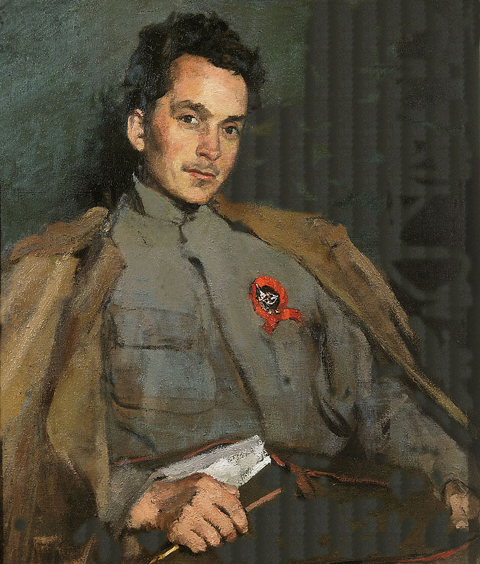
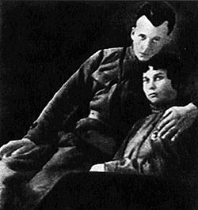
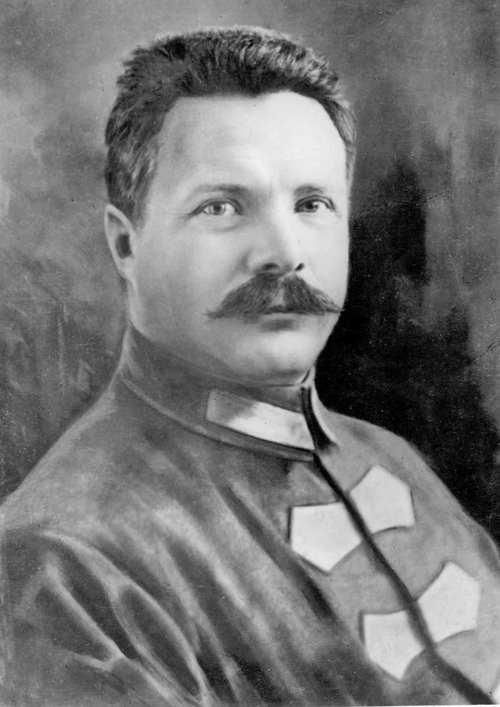
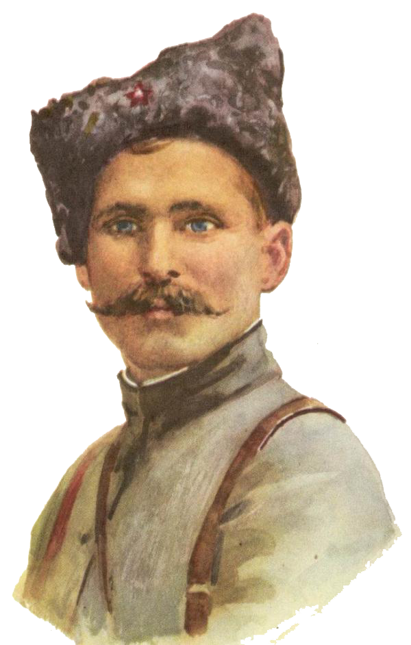
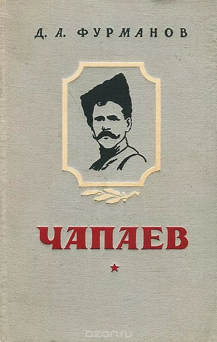
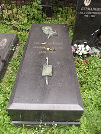

Дмитрий Андреевич Фурманов

Д. А. Фурманов
Дмитрий Андреевич Фурманов родился 7 ноября 1891 года в Костромской губернии в селе Середа Нерехтского уезда в крестьянской семье, которая потом перешла в мещанское сословие. В 1912 году он после окончания Кинешемского реального училища, сдав экстерном экзамен по латинскому языку, поступил на юрфак Московского университета, откуда вскоре перевёлся на историко-филологический факультет.
Когда началась война с германцами, Фурманов избрал для себя новую роль – брата милосердия. Его включили в один из санитарных поездов Земского Союза. Позже в поезде он встретил медсестру Анну Стешенко, которая стала его женой.

Д. А. Фурманов и А. Н. Стешенко

М. В. Фрунзе
В 1916 году недоучившийся студент решил вернуться в Иваново-Вознесенский край. Похоже, поначалу у него никаких твёрдых идейных убеждений не было. Так, весной 1917 года Фурманов примкнул к эсерам-максималистам. Потом его переманили к себе анархисты. Но когда власть захватили большевики, он тут же, заручившись рекомендацией своего давнего соратника
Михаила Фрунзе, подал заявление в РКП(б).
В марте 1919 года Фурманов вместе с женой был направлен на Восточный фронт в 25-ю дивизию, которой командовал Чапаев. Он стал комиссаром, а Стешенко возглавила в политотделе этой дивизии культпросвет. Отношения комдива и комиссара складывались непросто. Во-первых, Чапаев и Фурманов по-разному смотрели на мир. Во-вторых, всё сильно осложнил завязавшийся у Чапаева роман с женой комиссара.

В. И. Чапаев

Обложка одного из изданий романа "Чапаев"
В Москву Фурманов окончательно перебрался уже весной 1921 года. Бывший комиссар вернулся к занятиям литературой. Он быстро написал три книги: «Красный десант», «Чапаев» и «Мятеж». Как считал немецкий славист Вольфганг Казак, «своим местом в советской литературе Фурманов обязан только собственной политической позиции и деятельности. Его повесть «Красный десант» (1921) содержит описание наступательной операции Кубанской армии. В романе «Чапаев» (1923) нашли полудокументальное отражение военные действия в юго-восточных степях за Волгой, участником которых был Фурманов, причём себя он выводит под вымышленным именем комиссара Клычкова, который призывает к дисциплине стихийного народного героя Чапаева. Тем же методом соединения цитат с отчётами или донесениями в партийном духе в третьем своём произведении – романе «Мятеж» (1925) – Фурманов изображает борьбу советской власти с восстаниями в Средней Азии».
Умер Фурманов 15 марта 1926 года от менингита. Спустя год в Госиздате вышли его «Записки обывателя» со вступительной статьёй В.Ермилова. в основу этих записок лёг дневник вымышленного члена Реввоенсовета Вениамина Барского. Выдуманный военачальник не раз восторгался Троцким и Бухариным. Однако когда Троцкий и Бухарин оказались вне закона, цензура распорядилась «Записки обывателя» Фурманова отовсюду изъять.

Могила Д. А. Фурманова на Новодевичьем кладбище